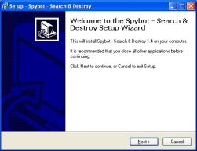
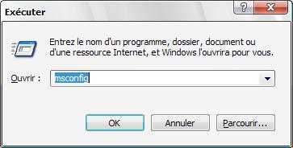
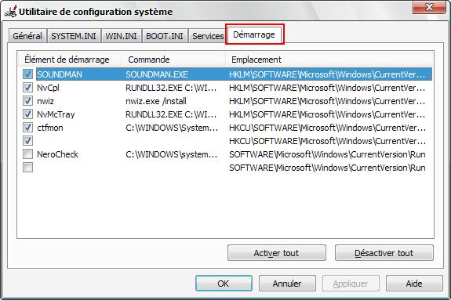

Bonjour à tous les Zér0s. Nous allons vous expliquer comment empêcher les programmes inutiles de se lancer au démarrage. Cela accélèrera votre ordinateur, et libèrera votre mémoire de la charge inutile que représente leur lancement. Cela vous permettra aussi par la même occasion de renforcer la sécurité de votre ordinateur : en effet, tous les programmes néfastes pour votre ordinateur doivent démarrer avec le système pour être actif.Je pense ici tout particulièrement aux virus et autres vers.
Le plus souvent, Windows est accompagné au démarrage de nombreux logiciels, par exemple iTunes, Quick time, votre logiciel antivirus, etc. Le fichier start-up se trouve dans la la base de registre de Windows à un endroit précis, et il permet à Windows de savoir lorsqu'il démarre quels logiciels doivent s'exécuter en même temps.
Lorsque Windows démarre, toute une multitude de logiciels, appelés par les fichiers autostart, se lancent par la même occasion. De nombreux logiciels sont inutiles, d'autres sont indispensables au bon fonctionnement de Windows.
Installer Spybot
Le but de la manipulation est donc de désactiver et/ou de supprimer ceux qui ne servent à rien, et qui encombrent le système. Spybot va donc nous permettre de gérer la liste des logiciels démarrant automatiquement avec l'ordinateur, avec un petit plus : une base de données relativement complète, qui nous permettra de savoir à quoi correspond ce fichier de démarrage (startup).
Comment procéder ?
Tout d'abord, il est possible de faire cette opération avec de nombreux logiciels. Nous utiliserons ici le logiciel SpyBot - Search & Destroy. C'est un logiciel très connu et très utilisé pour sa capacité à supprimer les spywares, adwares et autres "malwares". Mais malheureusement il reste peu connu pour sa base de données de service autostart, particulièrement complète.
...et puis l'installer. Voici comment il vous faut procéder :

Le premier écran de l'installation de Spybot.
Au premier écran, cliquez sur "Next".
A nouveau vous cliquez sur le bouton "Suivant" si le répertoire d'installation vous convient.
A ce moment là, je vous conseille vraiment de cocher la case "Donwload and update immediatly".
A nouveau vous cliquez sur le bouton "Suivant".
Là, je vous conseille de laisser cochée "Use Internet Explorer protection" : c'est une protection qui bloque le contenu de certains sites néfastes. Le "TeaTimer" est une protection qui vous demandera, à chaque modification du registre, si vous autorisez (ou non) cette modification (je conseille de le cocher uniquement si vous êtes un utilisateur avancé).
Et là, cliquez sur le bouton "Installez"
A la fin de l'installation, vous verrez une icône Spybot - Search & Destroy sur votre bureau (et une ligne dans votre menu Démarrer). Double-cliquez sur cette icône pour lancer Spybot-S&D.
Lors de la première utilisation de Spybot, un assistant apparaît. Son utilisation est intuitive. Si vous ne savez pas comment faire, pas de panique : vous cliquez sur le bouton "Next" ou "Suivant" tout le temps ;) .
Là, si Spybot est en anglais, allez dans "Language" et sélectionnez la langue voulue ; il y a vraiment le choix : soit russe si vous savez parlez russe, ou chinois si vous parlez chinois, et si par hasard vous parlez français, vous pouvez sélectionnez français (french en anglais). ^^
La zone 1 : Le menu "Outils" La zone 2 : Tous les sous-menus et options (ce que l'on ne verra pas) La zone 3 : Le sous-menu "Démarrage système" (ce qui nous intéresse) La zone 4 : La liste des fichiers start-up démarrant en même temps que l'ordinateur La zone 5 : La description du fichier start-up sélectionné (s'il est présent dans la base de donnée de Spybot)
Puis cliquez sur la zone 3. A ce stade, vous devrez avoir un écran comparable à celui représenté ci-dessus.
La zone 4 et 5
Attention, les choses sérieuses commencent.
Un autre conseil : ne supprimez jamais directement un logiciel démarrant avec Windows, décochez-le simplement. Cela aura le même effet et désactivera ce programme ; ainsi en cas de problème vous pourrez à nouveau le cocher.
Comment faire ?
Sélectionnez un fichier dans la zone 4. Si des informations s'affichent dans la zone 5, cela vous permettra de savoir si ce programme est utile ou non. S'il s'avère utile, laissez-le coché. Si au contraire il est inutile, ...décochez-le.
Comment savoir si le programme sélectionné est utile ?
Regardez avant tout les indications de Spybot même si elles sont en anglais elles restent très utiles. Vous pouvez aussi regarder sur des sites spécialisés qui répertorient tous les processus systèmes. Je pense ici tout particulièrement a processlibrary.com Vous pouvez aussi regarder sur Google. Si votre recherche ne s'avère pas trés convaincante, allez voir sur les forums spécialisés (celui du Site du ZérO également) et après vous être assuré que la réponse n'y figure pas déjà, posez simplement la question. Si vous ne savez toujours pas si ce programme est utile, passez a la méthode "bourrin".
La méthode "bourrin"
Cette méthode n'est pas la meilleure, mais elle peut être utile. Il faut désactiver tous les programmes, sauf un, en les décochant. NE DESACTIVEZ AUCUNE DES .dll ! Comme ça vous saurez, avec la méthode du reverse engineering, si ce programme est utile ou non. En utilisant votre esprit logique.
Voilà ! Vous avez toutes les clefs en main pour vraiment accélérer votre pc et apprendre à gérer vos programmes.
Pour ceux qui ne veulent pas entendre parler de Spybot à cause d'une mauvaise expérience ou tout simplement parce que vous ne voulez pas installer un nouveau logiciel, voici une méthode alternative. il s'agit de "msconfig".
Cet utilitaire à l'avantage de ne pas pouvoir supprimer les Dll importantes au démarrage mais il offre des possibilités que l'utilisateur lambda ne devra pas toucher !
Mais comment fait-on pour lancer msconfig ? :o
Pour le lancer, allez dans le menu démarrer puis exécuter. Dans la fenêtre qui vient, tapez "msconfig" et appuyez sur "OK".

Une nouvelle fenêtre apparaît. Il y a plusieurs paramètres pour configurer Windows, mais NE TOUCHEZ QUE les données présentes dans l'onglet "Démarrage".

Une fois que vous avez quelque chose de similaire à l'écran, vous pouvez passer à l'action ! Comme dit précédemment dans le tuto, il ne faut en aucun cas supprimer les programmes de cette liste. Contentez-vous de les décocher !
C'est très souvent le cas pour les programmes comme Quicktime, Realplayer, etc... Enfin bref les programmes qui ralentissent le démarrage :) .
Allez ! Pour les fans du PC tout propre, voici quelques liens :
a-squared HiJackFree Excellent logiciel pour nettoyer tout ce qui concerne le démarrage de Windows et pour supprimer ce qui est inutile, voire nuisible (virus, etc.), il possède une fonction remarquable qu'est l'analyse du rapport via internet ; mais malheureusement, elle reste peu complète.
Starter Relativement complet, mais dépourvu de base de données et d'explication concernant les entrées. Cependant il a une fonction intéressante : l'affichage des propriétés de l'élément sélectionnés.
CCleaner Logiciel polyvalent, il peut analyser le registre, et supprimer les entrées qui ne pointent sur rien. Il nettoie aussi les fichiers inutiles pour le système historique de IE, de Firefox, et d'autres ... A posséder absolument !
EasyCleanner Bon logiciel très polyvalent sachant faire pas mal de choses comme par exemple le nettoyage des raccourcis brisés. Voir la capture d'écran.
Autoruns (en) Excellent logiciel remarquablement complet. Peut être trop. Avec un très grand nombre de fonctions pour nettoyer en profondeur son pc. Attention tout de même avec ce logiciel N'agissez pas à l'aveuglette nous sommes dans une partie de l'ordinateur très sensible, faites attention vous êtes prévenus. ;)
Et pour vraiment vous aidez allez plus loin voici aussi un tutorial particulièrement intéressent qui porte sur la gestion des services . Vous découvrirez ce qu'est un service et comment les gérer. Clic ici pour allez sur le tutoriel consacré aux services !
J'ajoute aussi le site http://www.processlibrary.com/. Ce site vous permettra de rechercher le processus concerner et de déterminer a quoi il sert et si il est nocif ou non, si il est indispensable ou non.
Bon nettoyage ^^.
Ce tutoriel est maintenant terminé. J'espère qu'il vous aura vraiment servi. Si vous le souhaitez vous pouvez améliorer ce tutoriel. Envoyez moi toutes vos corrections ou idées d'amélioration ICI. Si vous souhaitez compléter le tutoriel envoyez moi vos sous parties ICI. Ce tutoriel est libre profitez en ^^
 Télécharger SpyBot - Search & Destroy
Télécharger SpyBot - Search & Destroy
{kind=link}
{kind=link}